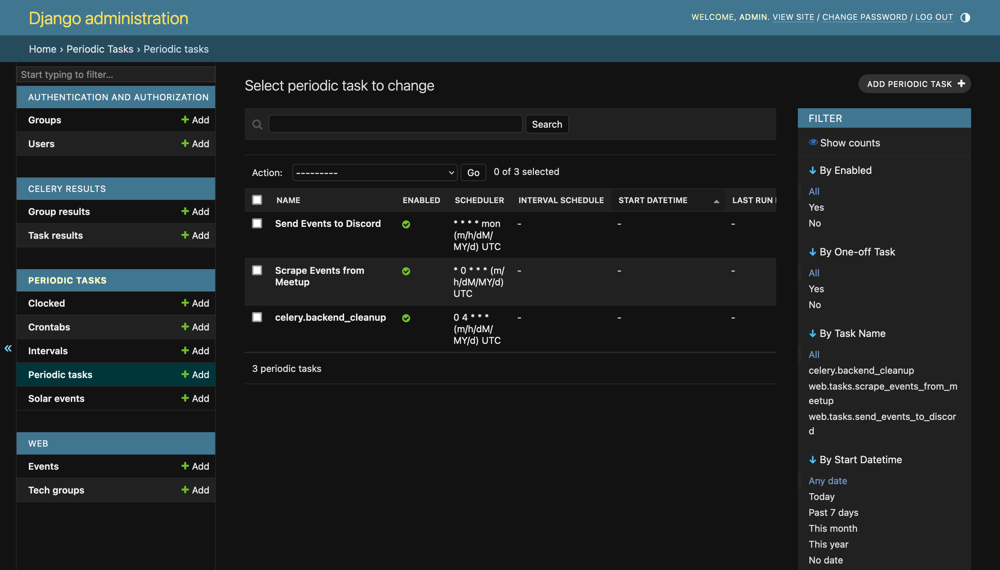

Contributing
First off, thank you for considering contributing to SpokaneTech_Py!
The following is a set of guidelines for contributing to this project. These are just guidelines, not rules. Use your best judgment, and feel free to propose changes to this document in a pull request.
Code of Conduct
This project and everyone participating in it are governed by the Code of Conduct. By participating, you are expected to uphold this code. Please report unacceptable behavior to organizers@spokanetech.org.
How Can I Contribute?
Reporting Bugs
- Before creating bug reports, please check the existing issues as you might find that the issue has already been reported.
- When creating a bug report, please include a clear and concise description of the problem and steps to reproduce it.
Suggesting Enhancements
- Before creating enhancement suggestions, please check the list of open issues as you might find that the suggestion has already been made.
- When creating an enhancement suggestion, please provide a detailed description and, if possible, an implementation proposal.
Pull Requests
- Provide a clear and concise description of your pull request.
- Ensure you have tested your changes thoroughly.
- Add/update unittests as necessary.
- Make sure code quality tools run successfully.
- Merging contributions requires passing the checks configured with the CI. This includes running tests, linters, and other code quality tools successfully on the currently officially supported Python and Django versions.
Development
You can contribute to this project by forking it from GitHub and sending pull requests.
First fork the repository and then clone it:
Create a virtual environment and install dependencies:
Note: to add a new dependency see Adding Dependencies.
python-dotenv will automatically load values in the .env file when Django's manage.py is used. Create a .env file from the template (note: .env should never be checked in to source control!):
Run Django migrations:
Create a Django superuser:
Run the Django development web server locally:
Unit tests are located in each Django app under the tests directory and can be executed via pytest:
Full walkthrough
Generated using script. The highlighted lines are commands that should be ran in your terminal. Some output is truncated for brevity and is designated by "...".Adding Dependencies
The lock files are generated using uv;
which is included in the development requirements. To add a file use:
uv add [--dev] SOME-DEP
uv pip compile pyproject.toml --extra dev -o requirements.dev.lock --prerelease=allow
uv pip compile pyproject.toml -o requirements.lock --prerelease=allow
Then make sure to sync the virtual environment with the new lock files.
Dagger
Dagger is used for continuous integration and provides a dev environment with a Celery, Redis, and Postgres instances.
To run Dagger locally you will need:
To run all linters at once:
To spin up a dev environment use:
This command:
- Spins up the Django Server, Redis, Postgres, and Celery
- Creates a Django admin with username/password
dagger/dagger - Tunnels the Django server to localhost:8000
The Postgres database is mounted as a cache volume, so its state will persist between runs.
To wipe the database, pass the --fresh-database.
More Details
To list available functions use: Then, to call the functions use: To gather more information about a function, you can pass the `--help` arg to it:$ dagger call linters test --help
Run tests using Pytest.
Usage:
dagger call linters test [flags]
Flags:
--dev-req File A file.
--pyproject File A file.
Global Flags:
--debug Show more information for debugging
--focus Only show output for focused commands (default true)
--json Present result as JSON
-m, --mod string Path to dagger.json config file for the module
or a directory containing that file. Either
local path (e.g. "/path/to/some/dir") or a
github repo (e.g.
"github.com/dagger/dagger/path/to/some/subdir")
-o, --output string Path in the host to save the result to
--progress string progress output format (auto, plain, tty)
(default "auto")
-s, --silent disable terminal UI and progress output
Contributing to CI
When contributing to the CI it can be useful to install the SDK for autocomplete and linting. Plus, this enables type hints for third party modules, not just the first party Dagger SDK. Inside your virtual environment, run the following commands:
Dagger has an in-depth Developing with Python guide, and the Python SDK referance is here.
Celery
The easiest way to run Celery is using the Dagger development environment described above.
To run Celery manually you will need to start a message broker and a Celery worker. We are using redis for our message broker. Make sure you have Docker installed and run the following docker command to start a redis container:
In a separate terminal, run the Celery worker:
After running the Celery worker, you should see periodic tasks show in the Django admin UI:
- Then navigate to the Django admin UI

Refer to our Celery docs for more information on how Celery works.
Docs
When updating the docs locally, run the mkdocs server with mkdocs serve.
You can also build the docs with mkdocs build.
Style Guide
Follow the coding style outlined in the style guide.
License
By contributing, you agree that your contributions will be licensed under the GNU-3 license.